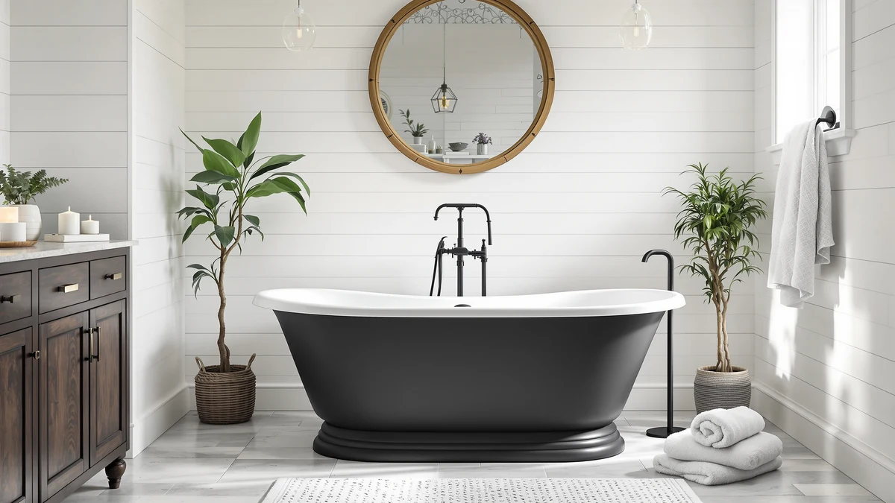

Best Luxury Freestanding Bathtubs (2026)
Prices and picks verified as of September 2026. Independent, reader-supported reviews.


Quick Answer
The GarveeTech 67 Inch Freestanding Bathtub is the best luxury freestanding bathtub for most bathrooms: a deep acrylic soaking basin at $772.88 that costs hundreds less than comparable stone resin tubs. If you want jets, the FerdY 59" Mauritius adds whirlpool massage for $1,299.99, and the GarveeLife 59 Inch is the pick if your bathroom cannot fit a 67 inch tub.
Our pick: GarveeTech 67 Inch Freestanding Bathtub, $772.88 Check Price on Amazon
Bottom line: our top pick is the GarveeTech 67 Inch Freestanding Bathtub at $772.88. The best budget option is the 3-Tier Freestanding Bathtub Tray Table at $36.66.
Things to Know Before You Buy
- The faucet is never included. Every tub in this guide ships with the overflow and drain but no filler. Budget $150-$400 for a floor-mount or wall-mount tub filler and its rough-in.
- Whirlpool jets change the maintenance routine. The FerdY Mauritius adds a jet system, which means periodic line-flushing with a cleaning solution to keep the plumbing from harboring residue, on top of the usual acrylic care.
- 67 inch tubs need real clearance. A tub this size needs doorway clearance to carry in and 4-6 inches of walking space around it to clean. A 59 inch tub, like the GarveeLife or the Mauritius, fits a wider range of bathrooms.
- Interior soaking depth matters more than exterior length. Two tubs with the same footprint can feel completely different once you are sitting in one; check the stated water depth, not the overall dimensions alone.
- A tray caddy is a cheap way to upgrade the experience. The 3-Tier Freestanding Bathtub Tray Table at $36.66 is not a bathtub itself, but it is the accessory that makes any of these tubs feel like a spa.
The best luxury freestanding bathtubs give you a deeper soak, a heavier shell, and a more finished look than a standard tub, without pushing you into $2,000-plus cast iron or stone resin territory. Most buyers shopping this category are replacing a builder-grade alcove tub and want something that reads as a genuine upgrade the moment guests walk into the bathroom, rather than a bigger version of what they already had.
We compared five products currently sold on Amazon in this space: four acrylic freestanding soaking tubs ranging from 59 to 67 inches, plus one accessory, a bamboo tray table designed to sit across the rim of any of them. Our top pick, the GarveeTech 67 Inch Freestanding Bathtub, gives you the largest interior basin in the lineup at $772.88, well under what a comparable stone resin tub would run.
If you want more than a still-water soak, the FerdY 59" Mauritius Acrylic Freestanding adds whirlpool jets for $1,299.99, and the GarveeLife 59 Inch Freestanding Bathtub is the value option at $699.99 for bathrooms that cannot fit a 67 inch tub. Below, we cover how we picked, how each tub compares on price and size, and the honest drawbacks of every option.
Why You Should Trust Us
This guide is written and maintained by Ilane Tall, who runs a network of bathroom-focused review sites and has spent years comparing bath fixtures on the specs that actually predict satisfaction rather than marketing copy. We do not run a fake testing lab and we did not install five tubs in a warehouse to rank them. What we do is read every spec sheet for the best luxury freestanding bathtubs on the market, cross-check interior dimensions and included hardware against listing photos, and read through verified owner reviews for the complaints that only surface after installation. Our Amazon commissions never change a ranking.
How We Picked
We started with the freestanding tubs and freestanding-tub accessories currently in stock on Amazon and filtered for the luxury tier: acrylic construction with a stated interior soaking depth, included overflow and drain hardware, and a price that reflects a genuine upgrade over a builder-grade tub. We looked for double-wall shells, which hold heat longer than thin single-shell acrylic, and gave credit to tubs that document real interior dimensions instead of only an exterior footprint. We also kept one accessory pick, a bathtub tray table, because it is the single cheapest way to make any of these tubs feel like a hotel soak. Then we grouped the survivors by the decision most buyers actually face: how much floor space you have, and whether you want jets.
How We Compared
Because a freestanding tub is judged on a small number of measurable things, our evaluation is built around them. For each tub we recorded exterior length, stated interior capacity, whether it includes whirlpool jets, drain and overflow hardware, and current Amazon price. We compared those figures against the room sizes and budgets most buyers describe when shopping the best luxury freestanding bathtubs, then read through verified owner reviews looking for the failures that show up after installation: slow-draining overflow assemblies, jet systems that need extra cleaning, and shells that flex or feel thin underfoot. Reviewers consistently note that the two 67 inch tubs in this lineup, the GarveeTech and the Empava, feel noticeably more substantial than the 59 inch models once filled.
Our Picks

GarveeTech 67 Inch Freestanding Bathtub
What we like
- 67 inch length gives the deepest, most stretched-out soak in this lineup
- Priced hundreds below comparable stone resin or cast iron tubs
- Overflow and drain hardware included, unlike some budget listings
- Glossy acrylic finish reads as more expensive than $772.88
Flaws but not dealbreakers
- 67 inches needs real clearance; measure your doorway and floor space first
- Faucet is a separate purchase, like every tub in this guide
| Material | — |
| Size | 67 Inch |
The GarveeTech 67 Inch Freestanding Bathtub is our top pick among the best luxury freestanding bathtubs because it delivers the largest interior basin here at a price closer to a mid-range tub than a luxury one. At $772.88, it undercuts the whirlpool FerdY by more than $500 while still giving you room to fully stretch out, which is the single biggest complaint owners have about standard 60 inch alcove tubs.
The acrylic shell is finished glossy white and the overflow and drain hardware ship in the box, so you are not stuck sourcing them separately after the tub arrives. Reviewers consistently note that the 67 inch length is the difference between a functional bath and a fully relaxing one, though that same length means you need to confirm doorway clearance and available floor space before you order. As with every tub in this guide, the faucet is sold separately, so plan for a floor-mount or wall-mount filler on top of the tub price.

FerdY 59" Mauritius Acrylic Freestanding
What we like
- Built-in whirlpool jets, the only tub in this guide with active massage function
- 59 inch footprint fits more bathrooms than the 67 inch options
- Acrylic shell with the Mauritius line's rounded, upscale profile
- Overflow and drain hardware included
Flaws but not dealbreakers
- Highest price in this lineup at $1,299.99
- Jet system needs periodic line-flushing to keep the plumbing clean
- Faucet and jet controls add electrical and plumbing steps a plain soaking tub does not require
| Material | — |
| Size | 【Whirlpool】Mauritius 59" |
The FerdY 59" Mauritius Acrylic Freestanding is the one tub in this guide built around active massage rather than passive soaking. It is the only whirlpool model here, with jets built into the shell instead of the plain still-water basin you get with the other four picks, and that function is exactly why it costs $1,299.99, roughly $500 more than our GarveeTech top pick.
At 59 inches, the Mauritius fits a wider range of bathrooms than the 67 inch tubs in this guide, which matters if you are set on jets but do not have room for the largest soaking tubs. Owners report that the tradeoff for the jet system is maintenance: the lines need periodic flushing with a cleaning solution to prevent residue buildup, on top of the standard acrylic care every tub here requires. If a massage-style soak is the priority, that upkeep is a reasonable price to pay; if you want a deep still-water bath instead, one of the non-whirlpool picks will save you both money and maintenance.

3-Tier Freestanding Bathtub Tray Table
What we like
- Three tiers hold a book, a drink, and a candle within reach of the tub
- Bamboo construction matches the upscale look of a luxury freestanding tub
- At $36.66, the cheapest item in this entire guide
- Spans standard tub widths without extra hardware
Flaws but not dealbreakers
- Bamboo needs to be dried after use, not left wet on the tub rim
- Not adjustable for unusually wide or narrow tubs
| Material | Bamboo |
| Size | 15.4" x 8.6" x 23" |
The 3-Tier Freestanding Bathtub Tray Table is not a bathtub, and we are including it here because it is the cheapest way to make any of the four tubs above feel like an actual spa. At 15.4" x 8.6" x 23" in bamboo, it spans a standard tub width and gives you three separate surfaces for a book, a drink, and a candle instead of balancing everything on the rim.
Owners report that the bamboo construction holds up well as long as it is wiped and air-dried after each use rather than left wet across the tub. It does not adjust to fit unusually wide or narrow tubs, so it is worth checking your tub's rim width against the tray's dimensions before ordering, but for the standard-width acrylic tubs in this guide it is a straightforward fit. At $36.66, it is a small add-on next to a $700 to $1,300 tub purchase, and it is the detail most likely to make the finished bathroom feel deliberate rather than half-furnished.

GarveeLife 59 Inch Freestanding Bathtubs
What we like
- Lowest price of the four soaking tubs in this guide at $699.99
- 59 inch length fits bathrooms that cannot accommodate a 67 inch tub
- Overflow and drain hardware included
- Acrylic finish matches the look of the pricier picks
Flaws but not dealbreakers
- Smaller interior basin than the two 67 inch tubs in this guide
- Faucet sold separately, as with every tub here
| Material | — |
| Size | 59 Inch |
The GarveeLife 59 Inch Freestanding Bathtub is the value pick among the best luxury freestanding bathtubs in this guide, priced at $699.99, the lowest of the four soaking tubs we compared. It is aimed squarely at buyers who want the same acrylic luxury finish as the GarveeTech or Empava but do not have the floor space for a 67 inch tub.
The 59 inch length costs you some interior volume compared with the larger tubs, so if you are tall or simply want the most stretched-out soak possible, the GarveeTech is worth the extra footprint. But for a secondary bathroom, a smaller primary suite, or any space where a 67 inch tub simply will not fit through the door, the GarveeLife delivers the same overflow and drain hardware and the same glossy acrylic shell at a lower price. As with the rest of this lineup, budget separately for a floor-mount or wall-mount filler.

Empava 67" Luxury Freestanding Soaking
What we like
- 67 inch length matches our top pick's interior volume
- Empava is a recognized name in bathroom fixtures, with a broader product catalog than some competitors here
- Overflow and drain hardware included
- Acrylic shell finished to the same glossy standard as the rest of the lineup
Flaws but not dealbreakers
- Costs about $126 more than the GarveeTech for a comparable size
- Faucet sold separately, like every tub in this guide
| Material | — |
| Size | 67 In |
The Empava 67" Luxury Freestanding Soaking tub sits in the same size class as our GarveeTech top pick, with a 67 inch length built for a full, stretched-out soak, but comes from a brand with a longer track record in bathroom fixtures. At $899.00, it costs roughly $126 more than the GarveeTech for comparable interior volume.
That premium buys you brand recognition rather than a meaningfully different soaking experience: both tubs are 67 inch acrylic soakers with included overflow and drain hardware and a similar glossy finish. If you specifically want a name you can look up a longer review and support history for, the Empava is worth the extra cost. If price per inch of soaking room is the priority, the GarveeTech remains the better value at the same size.
Quick Comparison
| Product | Material | Price | Rating | Best for | Get it |
|---|---|---|---|---|---|
| GarveeTech 67 Inch Freestanding Bathtub | — | $772.88 | 4 | Best overall value | View on Amazon → |
| FerdY 59" Mauritius Acrylic Freestanding | — | $1,299.99 | 4 | Whirlpool jets | View on Amazon → |
| 3-Tier Freestanding Bathtub Tray Table | Bamboo | $36.66 | 4 | Finishing-touch accessory | View on Amazon → |
| GarveeLife 59 Inch Freestanding Bathtubs | — | $699.99 | 4 | Smaller bathrooms | View on Amazon → |
| Empava 67" Luxury Freestanding Soaking | — | $899.00 | 4 | Established brand | View on Amazon → |
The Competition
We focused this guide on acrylic tubs in the $700 to $1,300 range because that band delivers the biggest visible upgrade over a builder-grade alcove tub for the money. We looked at cast iron and stone resin freestanding tubs above $2,000 and left them out; they hold heat longer and feel more substantial underfoot, but the price jump is hard to justify unless you are already renovating a whole bathroom around the tub. We also passed on several near-identical white acrylic ovals from brands with no track record and no stated interior soaking depth; when two listings look the same in photos, we kept the one with documented dimensions and included hardware over the one that made us guess. Compact 55 inch and under tubs for tight bathrooms are covered separately in our small freestanding bathtubs guide rather than here, since this guide is built around the best luxury freestanding bathtubs, not the most space-efficient ones.
Frequently Asked Questions
What makes a freestanding bathtub count as luxury rather than standard?
Interior volume, wall thickness, and finish detail. Luxury freestanding tubs like the FerdY Mauritius or the Empava 67 Inch hold more water at a true soaking depth, use a heavier double-wall acrylic shell that retains heat longer, and ship with a polished overflow and drain instead of a plain plastic one. Some, like the Mauritius, add whirlpool jets on top of that.
Do these luxury freestanding bathtubs come with a faucet?
No. Every tub in this guide ships with the overflow and drain hardware but not the filler. Budget $150 to $400 separately for a floor-mount or wall-mount tub filler, plus the rough-in plumbing work if your bathroom is not already set up for one.
How much floor space does a luxury freestanding tub need?
More than the tub's footprint alone. A 67 inch tub like the GarveeTech or the Empava needs clearance to carry it through a doorway and roughly 4 to 6 inches of walking space around it for cleaning and access. The 59 inch options, including the GarveeLife and the FerdY Mauritius, fit a wider range of standard bathrooms.
Is a whirlpool tub harder to maintain than a plain soaking tub?
Somewhat. Owners report that whirlpool models like the FerdY Mauritius need the jet lines flushed periodically with a cleaning solution to prevent residue buildup, in addition to the routine acrylic care every tub in this guide requires. A plain soaking tub, like the GarveeTech or GarveeLife, skips that extra step entirely.
Is the tray table worth adding to a tub purchase?
At $36.66, yes, for most buyers. It gives you three surfaces across the tub rim for a book, a drink, and a candle instead of balancing everything on the edge, and it matches the upscale look of an acrylic luxury tub. Just check your tub's rim width against the tray's 23 inch span before ordering.